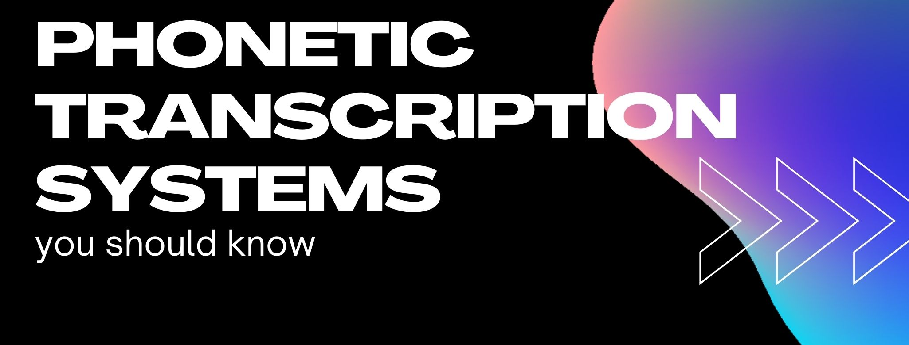

Tags: Linguistics, Phonetics, Transcription

Phonetic transcription is the use of phonetic symbols to represent speech. We could say it's a way to visually represent speech sounds, which is important because orthography often doesn't represent pronunciation accurately.
Each phonetic symbol represents a sound in a spoken utterance. However, which phonetic symbol we use depends on the phonetic transcription system we follow. This means that the same dataset can be transcribed in more than one way. The most popular phonetic transcription systems are IPA, SAMPA, and X-SAMPA (though there are others). Each of these systems is used for different purposes. Keep reading to learn more!
The International Phonetic Alphabet (IPA) was created in the 19th Century by a group of linguists and language teachers. Basically, these people wanted to have a universal way of representing all existing speech sounds in writing.
The symbols in the IPA are represented mainly by Roman characters, although there are characters from other alphabets too (e.g., Greek). All symbols are systematically organized according to three variables: place of articulation, manner of articulation, and voicing (you can hear all sounds here!). The original IPA chart has been revised multiple times during the 20th and 21th Centuries by the International Phonetic Association. You can check out the latest version here.
Nowadays, the IPA is mostly used by linguists and speech pathologists, and also in dictionaries.
Although the IPA looks like a reliable phonetic system to represent speech sounds, it became problematic when computers appeared, as many IPA characters were not supported in ASCII (the standard character encoding at the time). To address this issue, the Speech Assessment Methods Phonetic Alphabet (SAMPA) was developed. Specifically, SAMPA was created by a European Comission-funded project and consists of a computer-readable phonetic alphabet that uses 7-bit printable ASCII characters to avoid encoding issues.
SAMPA is based on the IPA, and many symbols coincide in both phonetic systems (you can use this IPA > SAMPA converter to see the differences!). However, those symbols not supported in ASCII have been substituted by alternative characters. Nowadays, with the advent of Unicode encoding, the need for SAMPA is not that great, as Unicode supports IPA symbols. Still, SAMPA is widely used in speech technology.
One of the main weaknesses of SAMPA is that it is language-dependent. This means that someone who wants to transcribe a word phonetically in Spanish, for instance, would have to use a particular SAMPA alphabet which would differ from the alphabet used to transcribe a word in English. The Extended Speech Assessment Methods Phonetic Alphabet (X-SAMPA) was developed precisely to unify all individual SAMPA alphabets.
Like SAMPA, X-SAMPA also consists of 7-bit printable ASCII characters (you can check out the alphabet here or try out the IPA > x-SAMPA converter!).
Besides IPA, SAMPA, and X-SAMPA, there are other phonetic transcription systems, usually developed for a specific project or task. Among these, we can find ARPABET, KLATTBET, MRPA, WorldBet, and several others.